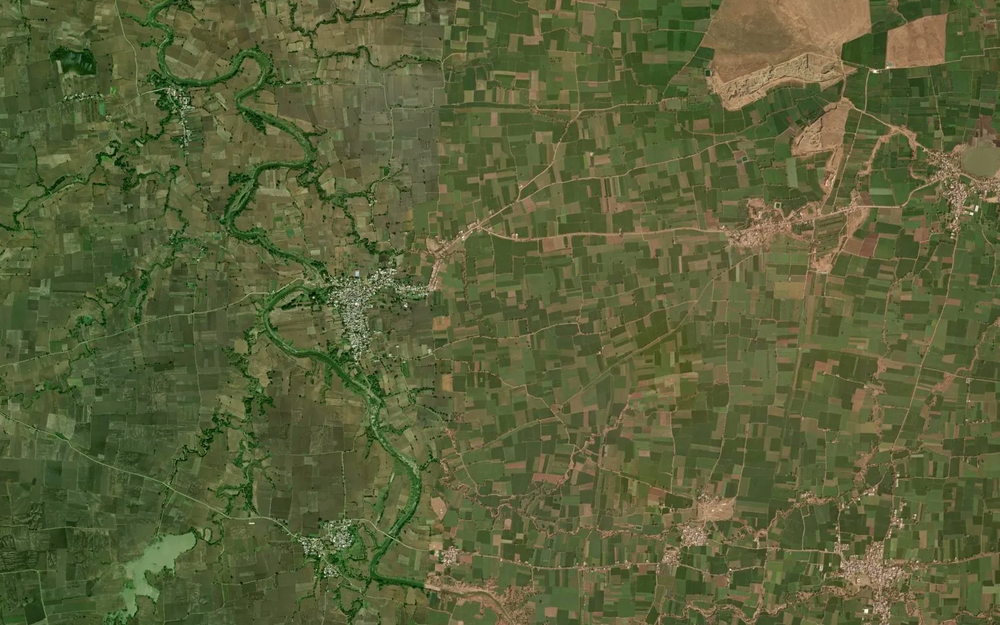

MP Bhu Naksha: see the khasra map on MP Bhulekh and get it as KML, DWG or SHP

MP Bhu Naksha (एमपी भू नक्शा) is the Madhya Pradesh village map that sits beside the khasra and B-1 records on the state land-record portal, MP Bhulekh. You can see where a khasra lies and its outline for free. This guide shows how to open it, what it cannot do for a project, and how to turn a village into a file for satellite imagery.
1. How to open the MP Bhu Naksha map
- Open mpbhulekh.gov.in and go to the free services section.
- Choose the khasra / B-1 / map service, then the district, tehsil and village.
- Pick the khasra number. The plot is shown on the village sheet with its outline.
- The state also runs a WebGIS viewer (webgis2.mpbhulekh.gov.in) that draws the parcels on a map interface.
The khasra and B-1 records tell you the holder and the land entry. The map shows the shape and position of the plot. Open both together. See how to read an MP khasra map with the B-1.
2. What the portal does not give you
- It gives the map of a plot or a village sheet, not a georeferenced khasra file you can download for a whole project area.
- The record map does not line up exactly with satellite imagery, because it was drawn on a local survey basis.
- Land category such as government (sarkari) land has to be read from the khasra and B-1 entries. It is not coloured for a project team.
- Many projects cross several villages and tehsils, and checking them one sheet at a time is slow.
3. From the MP map to a satellite map
For a satellite view, the village map is digitized and georeferenced: each khasra becomes a closed polygon with its number, fitted to WGS 84 / UTM coordinates and checked against field bunds, roads and nalas on the imagery. The file then opens in Google Earth, QGIS or AutoCAD. Government land can be coloured from the record so a project team sees it at once. Read how to check government land in a village.
4. Search terms that mean the same thing
MP Bhu Naksha, MP Bhulekh map, MP khasra map, MP land map and Madhya Pradesh village map with khasra numbers all point to the same revenue village map. Whatever you call it, the usable form for a project is a georeferenced file.
5. Typical uses
Solar and wind developers, transmission teams and highway teams use the file to list khasras inside a boundary, find allotable government land, plan blocks and prepare land schedules. The overlay is a planning base and not proof of title. Confirm any status that decides a project with the revenue office and survey the ground where a boundary matters.
Frequently asked questions
Is MP Bhu Naksha free?
Yes. The ordinary village map and khasra view on MP Bhulekh are free services.
Can I download a KML or DWG from MP Bhulekh?
The portal does not give a georeferenced KML, DWG or SHP. That file is made by digitizing and georeferencing the village map.
Where do I read the B-1 for a khasra?
On the same portal, mpbhulekh.gov.in, in the khasra / B-1 service.
एमपी भू नक्शा: सार
मध्य प्रदेश भू नक्शा एमपी भूलेख पोर्टल पर खसरा और बी-1 के साथ देखा जा सकता है। गांव का जियो-रेफरेंस्ड खसरा नक्शा सैटेलाइट इमेज पर KML, DWG और SHP फाइल में चाहिए तो हमें गांव की सूची भेजें।
More: Madhya Pradesh khasra maps, land record and revenue websites of every state, bhu naksha satellite map, check your village with the village checker, or ask for a quotation. BHU-NETRA Map Service is a private service and is not connected with any state government.
Need the village map as KML, DWG or SHP?
Georeferenced and digitized khasra maps in KML, DWG, SHP and Excel for 20 states, plus DGPS, Total Station, topographic and drone surveys. Single village orders welcome.